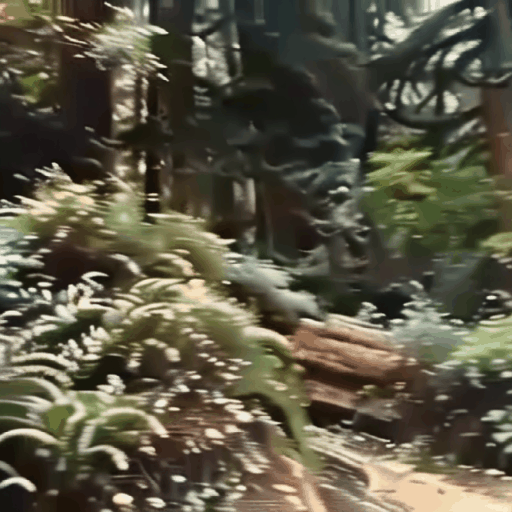
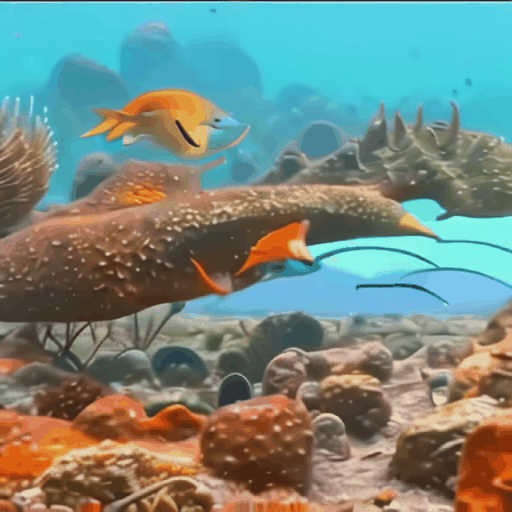
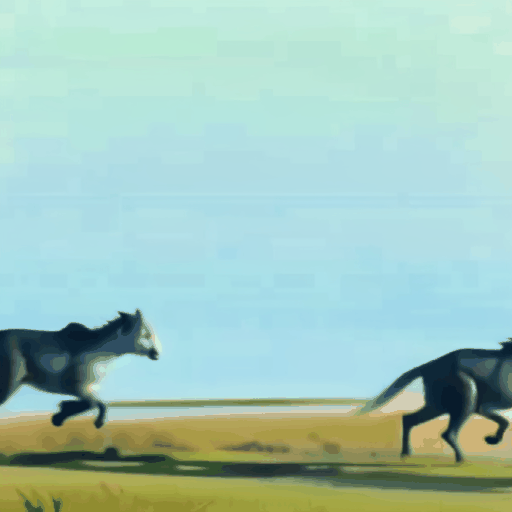

Main Results
fMRI-to-image Decoding
Results of fMRI-to-image reconstruction. Our model successfully generates images that align well with the ground truth in both semantic and spatial aspects. By comparing the results with and without semantic("what")/spatial("where") embeddings, we demonstrate that semantic and spatial embeddings significantly enhance the model's ability to accurately reconstruct and localize objects within the image.
fMRI-to-motion Decoding
Results of fMRI-to-motion decoding. Our model effectively predicts optical flow based on fMRI and image data, demonstrating accurate motion decoding performance.
fMRI-to-video Decoding
Ground Truth
Subject 1
Subject 2
Subject 3
More Results for Subject 1
GT
Pred

GT
Pred
